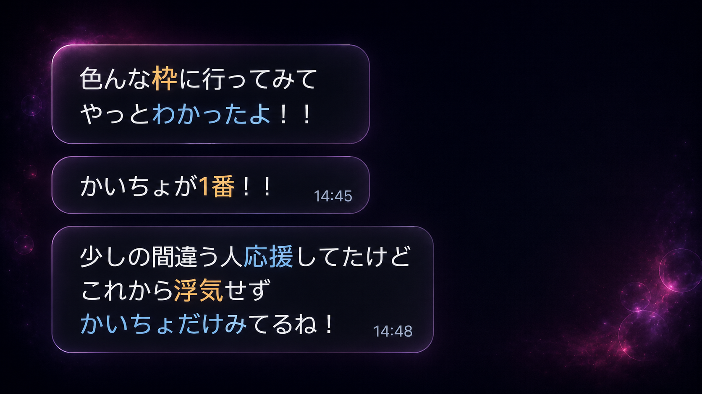
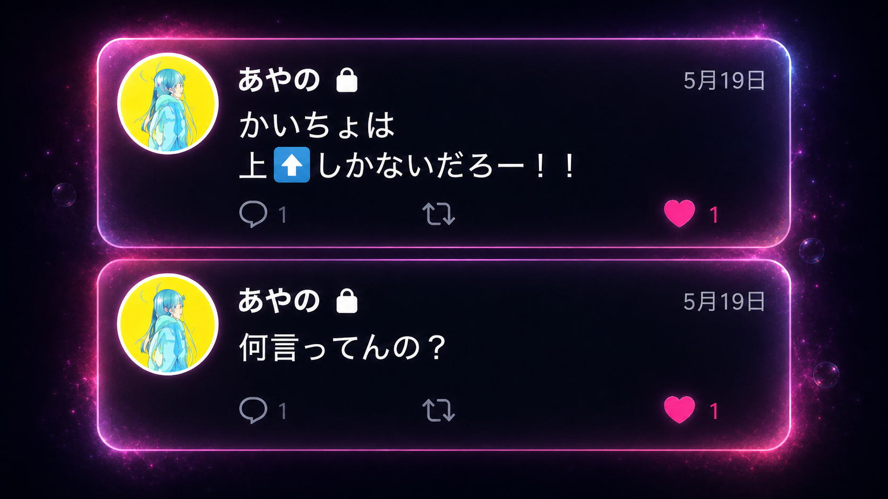
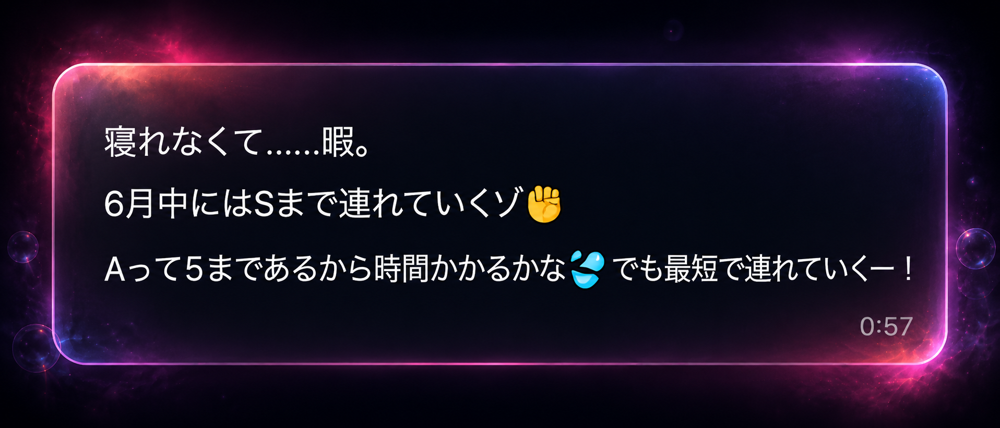
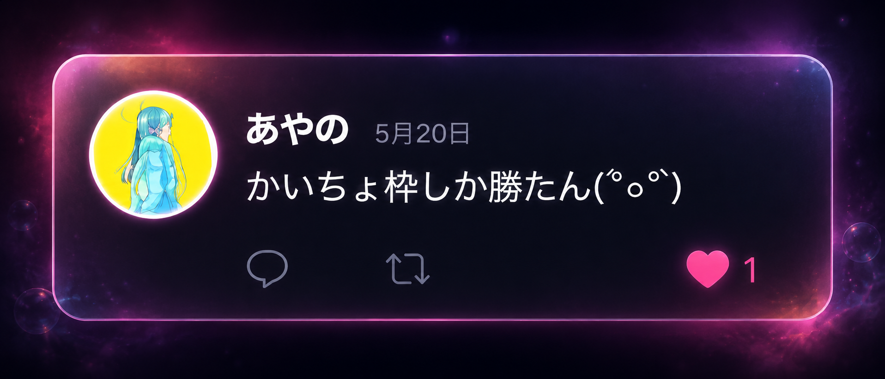

June's Monthly MVP｜あやの
あやのは、僕が D帯の時からずっと応援してくれてる
最古参リスナーです。
基本 ROMでほんとに楽しんでくれてるのか
不安になるときもあったけど
いままでいろんな配信者を応援してきたあやのに
最高の配信者って言てもらえて本当にうれしかった。

5月にパフォーマンスがしきい値を下回る事が多々あって
そのタイミングでトプリスがイケカテに流れて
正直 Palmu では、異性リスナーの性癖を刺激して
二次元の想像で美化されるラジオ配信が
一番ニーズに合ってるんじゃないかって迷走した時期があった
それでラジオの二部配信を導入したり
試行錯誤のフェーズだった。

攻めのタイミングで発破をかけてくれたのがあやの
なんでリスナーが上しか見てないのに
ライバー側が地に足つけようとしてんだ
喪失した自信を取り戻して我に返れた
「ずっとテンション高いからなんでそんなに元気なのとか絶対聞かないでね」
こんなこと言ってるけど
配信で病んだことは正直ある
でも悩んだことは一度もない
「エンタメで勝つ」
この信念を曲げた事は一度もない
もう面白い配信とかそういう次元じゃない
配信をショーとして設計してる
そこまでやらないとイケカテに勝てない

エンタメ全振りで構成考えてんのに
頑張った結果、
売上の大半が
「異性として好きです」
だったら
そりゃ
「俺が磨いてきたのそこじゃねぇんだけどな」
ってなる。
今までは、演出を磨けば磨くほど数字返ってきた。
だから
努力すれば勝てる
という世界観だった。
6月は特に「努力と結果が直結しない局面」に初めてぶち当たった
ここまで積み上げてきた演出設計やノウハウが
本当に価値あるのかわからなくなった
ライブ配信って残酷で、
努力量と売上が比例しない。
面白さと売上も比例しない。
恋愛感情やタイミングや客層も入ってくる.
そんなことは百も承知

正式には、あやのがここまでずっとついてきてくれてるのが
何よりも今までやってきたことが無駄じゃなかったっていう証明だよ
僕は、もっと面白くなる
配信をショーにする
配信者じゃなくて「演者」「パフォーマー」になる
そんなかいちょの背中を最前線で見守って欲しい
いつか見せる一番上の景色を
Palmuで覇権を握るその日まで
あやの、これからも末永くよろしくね

これは記録じゃない。
あやのとの関係の
“到達点の証明”
And simultaneously,
まだ途中であるという宣言。
Palmuで覇権を握るその日まで。
その景色を一緒に見てほしい。
あやのとの関係の
“到達点の証明”
And simultaneously,
まだ途中であるという宣言。
Palmuで覇権を握るその日まで。
その景色を一緒に見てほしい。